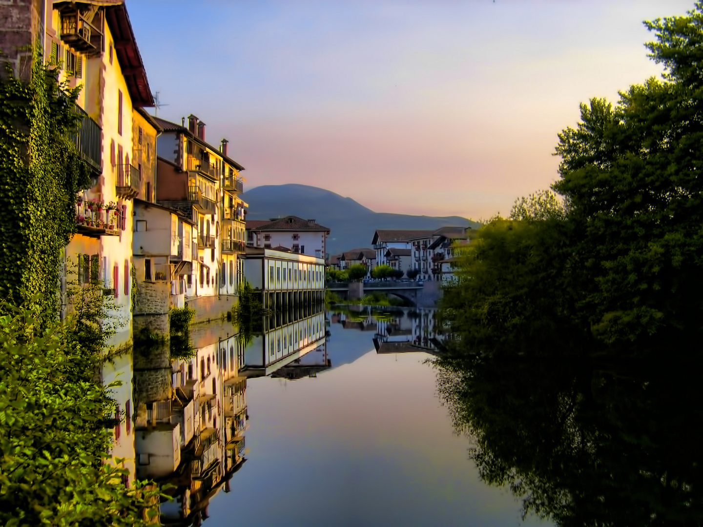
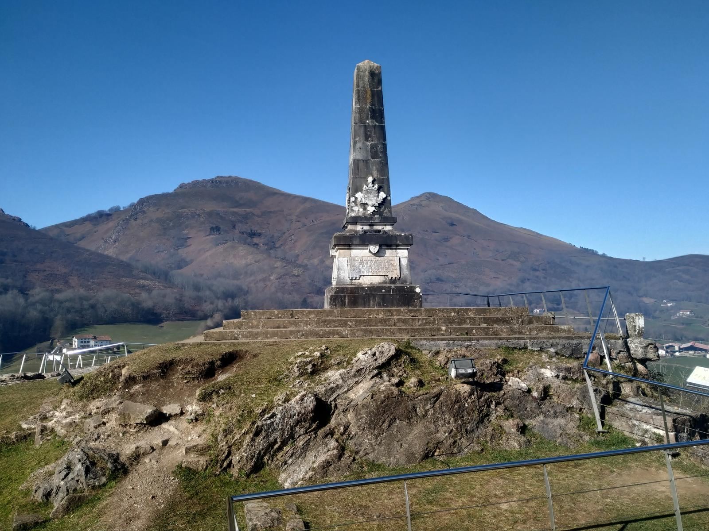
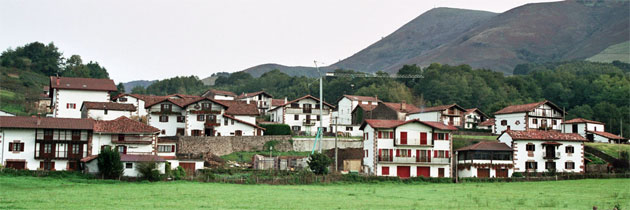

Descubre la Magia del Valle de Baztán
 Situada en pleno corazón del Valle de Baztán, nuestra casa rural está rodeada de pueblos con un profundo arraigo cultural y paisajes de gran belleza. Esta zona es ideal para pasear, descubrir su arquitectura tradicional y empaparse de la historia que se respira en cada rincón. Uno de los principales atractivos es Elizondo, capital del valle, famoso por sus casonas señoriales de piedra y madera, sus puentes sobre el río Bidasoa y sus animadas plazas. No te puedes perder la Plaza de los Fueros, el Palacio de Arizkunenea y la Iglesia de Santiago.
En Elizondo también encontrarás numerosas pastelerías tradicionales donde degustar delicias como el urrakin egina (chocolate con avellanas) o el popular pastel vasco. Todos los viernes se celebra el mercado semanal, donde los productores locales ofrecen queso, miel, embutidos y pan artesanal, convirtiéndose en un punto de encuentro para vecinos y visitantes.
 Muy cerca se encuentra el Barrio de Amaiur, uno de los más pintorescos del valle, con su famoso arco de entrada y el monumento al castillo de Amaiur, vestigio del último bastión navarro en resistirse a la conquista de Castilla. Desde allí, se disfruta de una panorámica excepcional del valle. El pueblo conserva una atmósfera auténtica, con calles empedradas, casas de piedra y antiguos molinos. Además, cuenta con un centro de interpretación donde los visitantes pueden conocer mejor los acontecimientos históricos ocurridos en la zona durante el siglo XVI.
 Otro lugar de visita imprescindible es Arizkun, donde se puede recorrer su barrio bohemio de Bozate, conocido por su historia relacionada con los agotes, una comunidad marginada durante siglos. Hoy, Bozate se ha transformado en un espacio de memoria y diversidad cultural.
En la misma zona, destaca el Museo Etnográfico Jorge Oteiza, situado en Elizondo, que ofrece una interesante visión de la vida cotidiana en el valle en siglos pasados, con utensilios agrícolas, muebles antiguos y trajes típicos.
Además, desde la casa rural podrás acercarte fácilmente a otros encantadores pueblos como Erratzu, Ziga o Arraioz, cada uno con su propio carácter, arquitectura y patrimonio. Son ideales para pasear tranquilamente y descubrir pequeñas iglesias, lavaderos antiguos, y rincones llenos de historia.
Para quienes disfrutan del silencio, la lectura o simplemente observar la vida del pueblo, el entorno es perfecto. Las plazas, las fuentes de piedra, las casas decoradas con flores y las campanas de las iglesias crean un ambiente de paz que invita a detenerse y disfrutar del momento. Todo ello sin necesidad de planificar grandes excursiones ni desplazamientos.